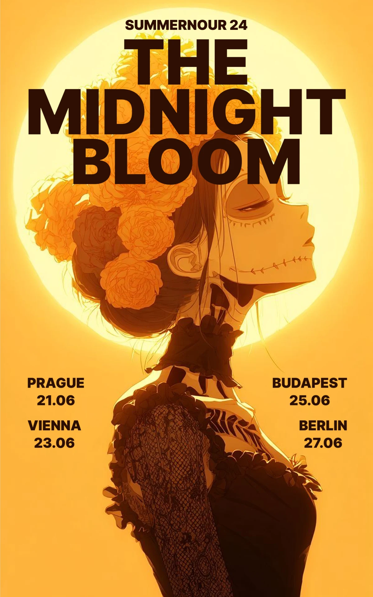
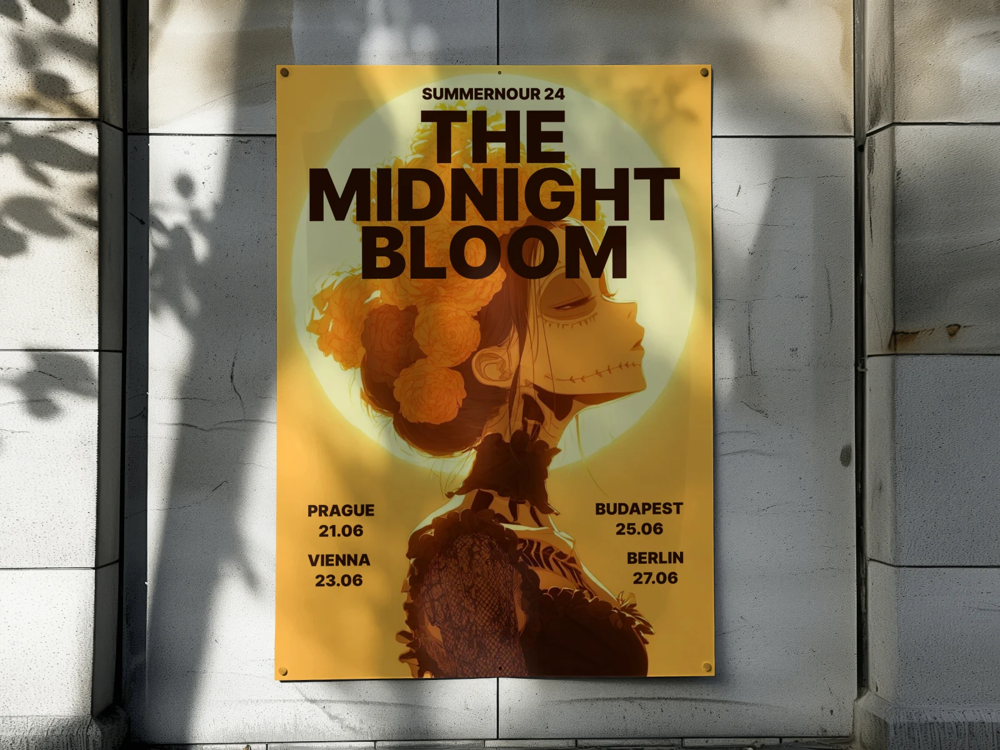

THE MIDNIGHT BLOOM
Гастрольный плакат тура: иллюстрация в контражуре и расписание городов.

- Клиент
- Летний тур THE MIDNIGHT BLOOM
- Задача
- Гастрольный плакат летнего тура: четыре города и даты — Прага 21.06, Вена 23.06, Будапешт 25.06, Берлин 27.06. Задача — задать образ тура и дать расписание одним разворотом.
- Роль
- Дизайн, композиция, работа с типографикой, подбор иллюстрации.
Гастрольный плакат должен работать в двух режимах одновременно: издалека — как образ, вблизи — как расписание. Поэтому структура здесь предельно жёсткая: титул сверху, четыре города по нижним углам, между ними одна большая иллюстрация. Никаких дополнительных блоков, чтобы плакат читался в любом из четырёх городов без переверстки.
Образ построен на контражуре: светящийся диск позади фигуры выжигает фон и превращает профиль в почти силуэт, оставляя различимыми только цветы в волосах и рисунок кружева. Палитра сведена к одному тёплому охристо-оранжевому в трёх светлотах, тёмно-коричневый работает и как цвет иллюстрации, и как цвет типографики — за счёт этого текст читается как часть изображения, а не наложенный слой. Титул набран в три строки с плотным интерлиньяжем и заходит на цветы, что связывает шрифтовой и изобразительный планы.

Готовый гастрольный плакат с расписанием четырёх городов в единой сетке — пригоден для расклейки в каждом городе тура без переверстки.